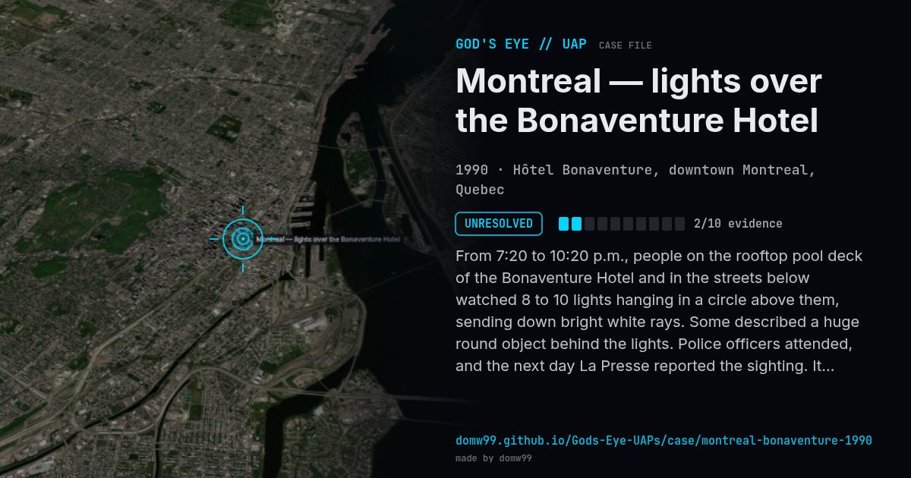

Montreal — lights over the Bonaventure Hotel
UNRESOLVED

From 7:20 to 10:20 p.m., people on the rooftop pool deck of the Bonaventure Hotel and in the streets below watched 8 to 10 lights hanging in a circle above them, sending down bright white rays. Some described a huge round object behind the lights. Police officers attended, and the next day La Presse reported the sighting. It drifted slowly north and was never identified.
What was seen
Shape: Ring of 8–10 bright lights; a huge round form
Witnesses: Hotel guests and staff, passers-by, police officers
Duration: 3 hours
Sources
Browse
- Canada
- 1990s
- Unresolved
- Mass sightings
- Many independent witnesses
- Police witnesses
- Lights and fireballs
- Spheres and orbs